This technical evaluation investigates machine-learning classification of a neurological-symptom phenotype among individuals already diagnosed with Wilson disease (n = 185). The models evaluated in this report are NOT diagnostic models for Wilson disease. They do not differentiate Wilson disease patients from healthy individuals or from patients with other hepatic or neurological disorders. The reported validation metrics reflect exploratory baseline research and must not be construed as validated diagnostic efficacy, clinical utility, or readiness for clinical decision support or regulatory deployment.
This technical report delivers a formal, rigorous assessment of three independent supervised machine-learning architectures—XGBoost, LightGBM, and Random Forest—trained to classify the presence or absence of a neurological symptom phenotype in 185 patients with confirmed Wilson disease. All experiments were conducted under identical data constraints using an isolated 20% validation split (n = 37), while the final 20% test partition (n = 37) remained strictly sealed to eliminate data leakage and selection bias.
Key validation takeaways include:
Wilson disease presents with pronounced clinical heterogeneity, ranging from pure hepatic manifestations to complex movement disorders, cognitive changes, or mixed symptoms. The research objective is to evaluate standard machine-learning classifiers for predicting the expression of a neurological-symptom phenotype using routine admission biochemical tests, coagulation markers, cranial imaging observations, and abdominal ultrasound findings.
"The models are not being evaluated for diagnosis of Wilson disease itself." All 185 subjects have established, biochemically verified Wilson disease. The classification task distinguishes intracohort phenotypic presentations. Therefore, the models are correctly classified as clinical phenotype research classifiers rather than diagnostic screening instruments.
The study utilized a well-characterized clinical cohort comprising 185 patient records and 42 predictive variables.
label (0 = absence of neurological phenotype, 1 = presence of neurological phenotype)Fidelity & Cleaning Pipeline:
To eliminate data snooping and maintain pristine evaluation standards, the dataset was partitioned using stratified sampling based on the binary target with random_state = 42:
Full Patient Cohort (N = 185)
├── Training Partition : 60% (n = 111 patients | Class 0 = 13, Class 1 = 98)
├── Validation Partition : 20% (n = 37 patients | Class 0 = 5, Class 1 = 32)
└── Final Test Partition : 20% (n = 37 patients | Class 0 = 4, Class 1 = 33) [SEALED]Leakage Prevention Governance:
RUN_FINAL_TEST = False).All three models were instantiated with conservative hyperparameter bounds designed to restrict empirical overfitting on a small training cohort (n = 111):
| Model | Key Configuration Parameters | Architectural Purpose |
|---|---|---|
| XGBoost | n_estimators=100, learning_rate=0.05, max_depth=3, subsample=0.8, colsample_bytree=0.8, scale_pos_weight=1.0, random_state=42 |
Standard gradient-boosted decision tree baseline with second-order Taylor expansion loss approximation. |
| LightGBM | n_estimators=100, learning_rate=0.05, max_depth=3, num_leaves=7, subsample=0.8, subsample_freq=1, colsample_bytree=0.8, random_state=42 |
Histogram-binned leaf-wise boosting baseline with conservative leaf depth limits. |
| Random Forest | n_estimators=300, max_depth=5, min_samples_split=4, min_samples_leaf=2, max_features='sqrt', class_weight=None, random_state=42, n_jobs=-1 |
Unweighted bagging ensemble baseline assessing variance reduction through orthogonal feature subsets. |
Due to the pronounced class imbalance (88.1% positive prevalence), raw accuracy is fundamentally misleading. A naive majority-class predictor would achieve 86.49% validation accuracy while having zero clinical utility. A comprehensive ten-metric suite was therefore calculated at the default threshold of 0.50:
The empirical metrics below were extracted directly from the validated output artifact reports/clinical/model_comparison.csv without manual adjustment or extrapolation:
| Model | ROC-AUC | PR-AUC | Accuracy | Balanced Acc | Sensitivity | Specificity | Precision | F1 | Log Loss | Brier |
|---|---|---|---|---|---|---|---|---|---|---|
| XGBoost | 0.7875 | 0.9621 | 0.9189 | 0.7000 | 1.0000 | 0.4000 | 0.9143 | 0.9552 | 0.3132 | 0.0875 |
| LightGBM | 0.7500 | 0.9501 | 0.9189 | 0.7000 | 1.0000 | 0.4000 | 0.9143 | 0.9552 | 0.3410 | 0.0909 |
| Random Forest | 0.7000 | 0.9364 | 0.8649 | 0.5000 | 1.0000 | 0.0000 | 0.8649 | 0.9275 | 0.3587 | 0.1057 |
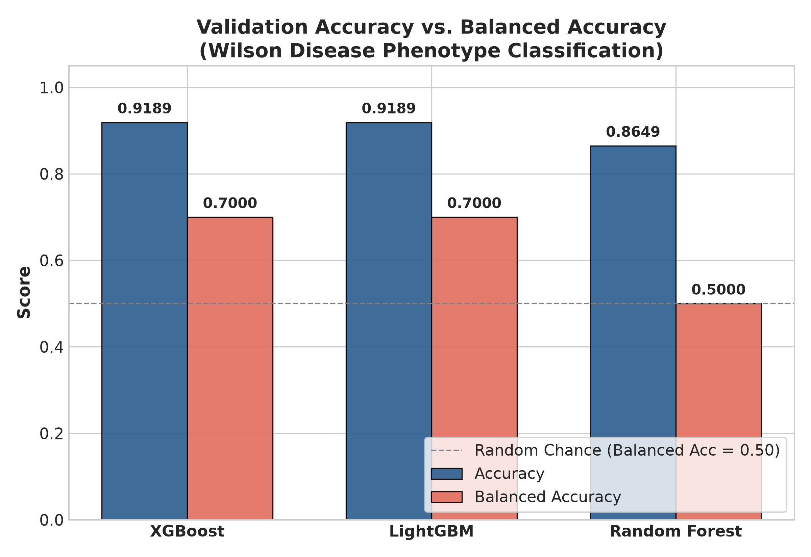
Both XGBoost and LightGBM attained the highest raw validation accuracy at 0.9189 (34/37 patients correct), whereas Random Forest registered 0.8649 (32/37 correct).
The highest accuracy model must not be automatically designated as the optimal model. Random Forest's nominal accuracy of 0.8649 is identical to the natural positive class prevalence (32/37 = 0.8649). Because Random Forest failed to classify a single Class 0 patient correctly at threshold 0.50, its balanced accuracy collapsed to 0.5000 (no better than random guessing across classes). In contrast, XGBoost and LightGBM achieved a balanced accuracy of 0.7000, confirming authentic non-trivial classification of both phenotypes.
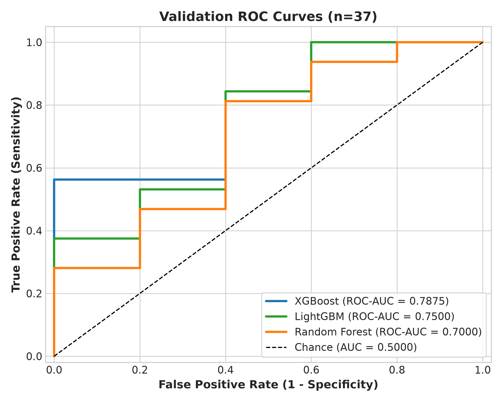
Threshold-independent discrimination was led by XGBoost (ROC-AUC = 0.7875), followed by LightGBM (0.7500) and Random Forest (0.7000). All three classifiers demonstrated performance well above random chance (0.5000). However, because the validation cohort has only 5 negative phenotype patients, each false positive produces a 20% step decrease in specificity. While XGBoost exhibited superior curve dominance, this difference must be interpreted with caution until verified on larger cohorts.
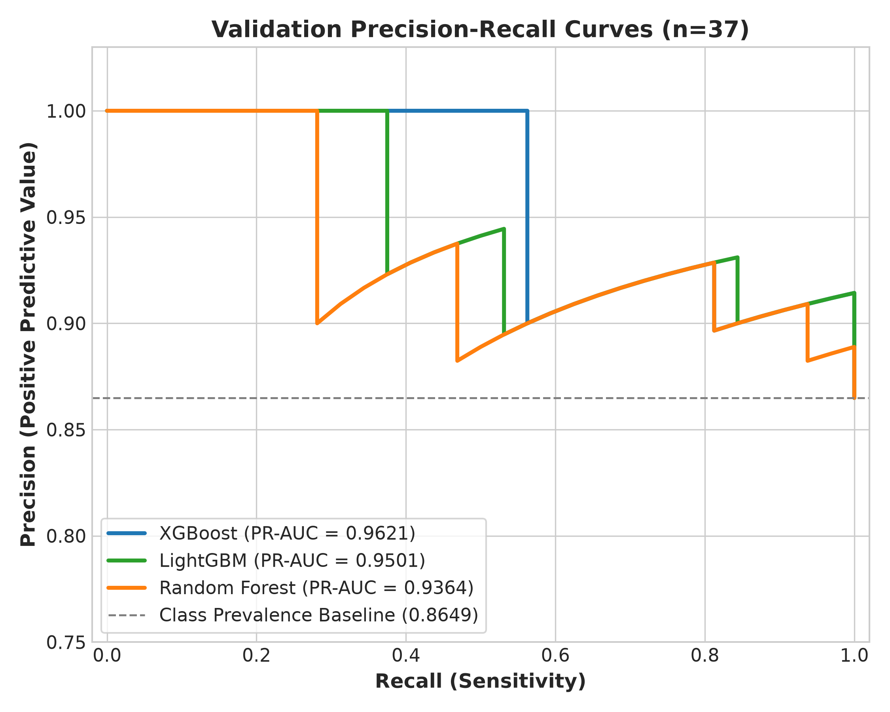
In highly imbalanced cohorts, Precision-Recall (PR) curves provide a more reliable picture than ROC curves because they do not reward models for true negatives in large majorities. The unskilled baseline equals the class prevalence: 32 / 37 ≈ 0.8649.
All three models exceeded this baseline significantly: XGBoost (PR-AUC = 0.9621), LightGBM (0.9501), and Random Forest (0.9364). This confirms that all three classifiers possess genuine predictive capacity for the neurological symptom phenotype.
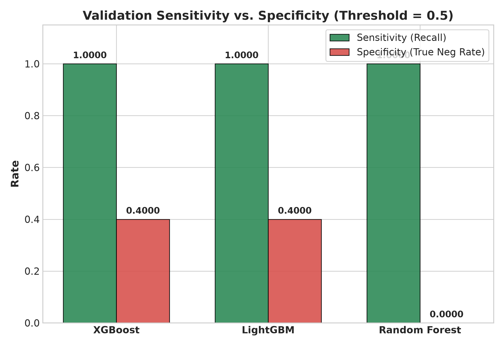
At threshold 0.50:
The inability of unweighted Random Forest to correctly identify negative patients at threshold 0.50 reflects the susceptibility of bagging methods to majority voting pull when individual trees are constructed without class weighting. Gradient boosting showed superior resilience in preserving separating margins.
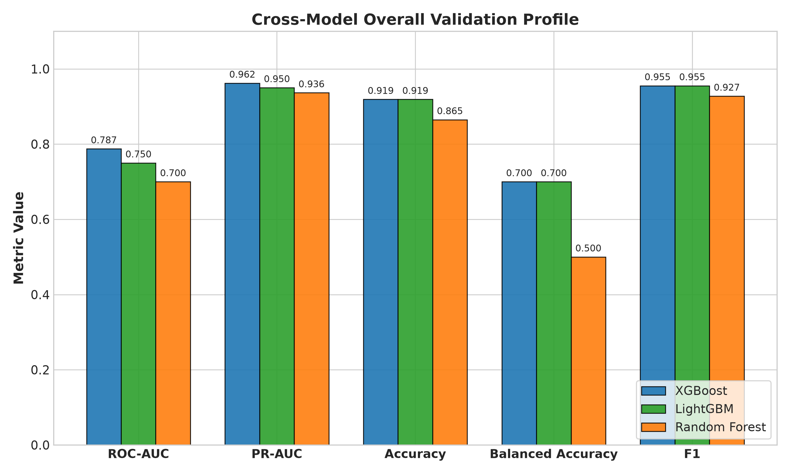
XGBoost established the strongest overall validation profile, achieving top ranks in ROC-AUC (0.7875), PR-AUC (0.9621), Log Loss (0.3132), and Brier Score (0.0875), while tying LightGBM in Accuracy (0.9189), Balanced Accuracy (0.7000), Specificity (0.4000), and F1-Score (0.9552). However, formal statistical superiority cannot be claimed on n = 37 without risk of false discovery.
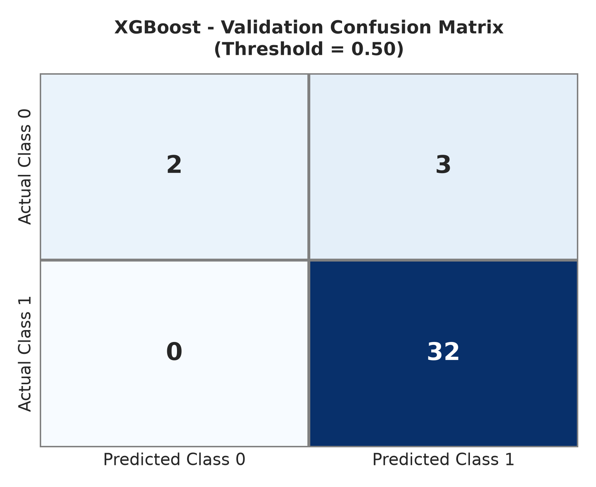
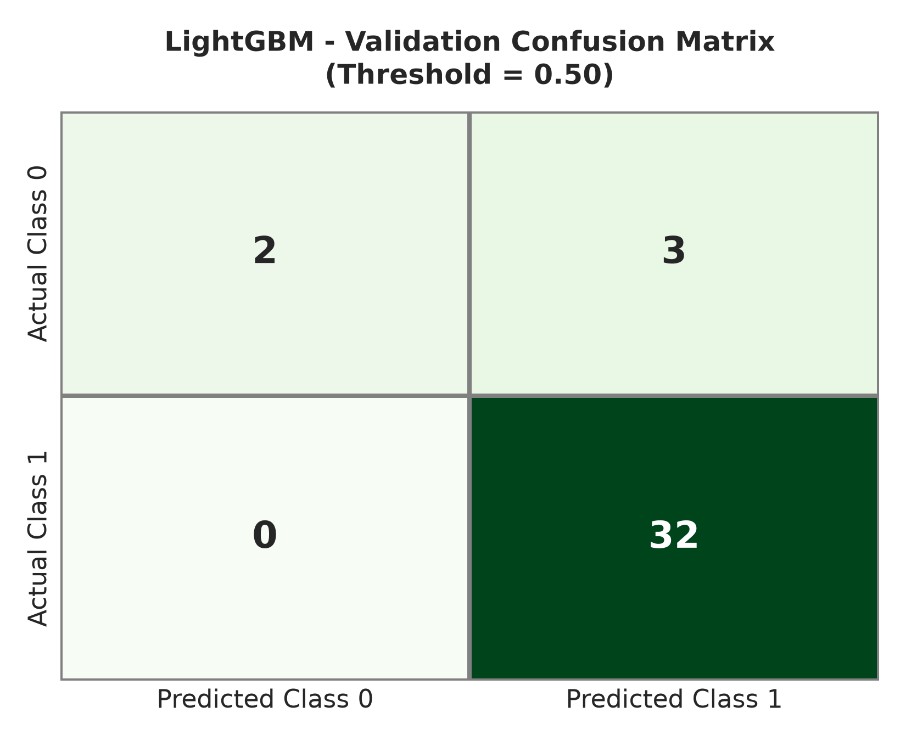
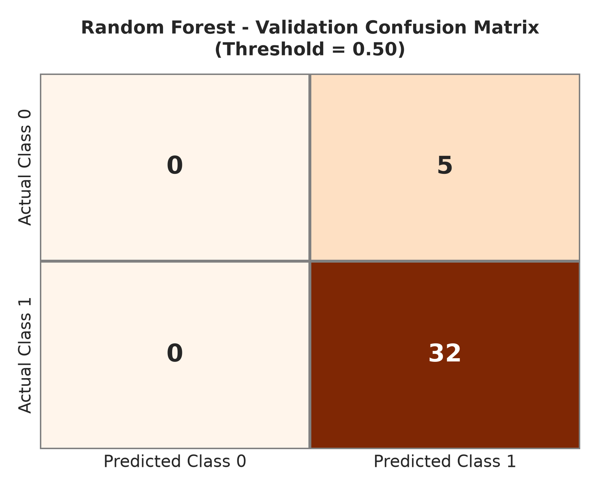
Across the 37 validation patients, zero false negatives were observed for any model. However, false positives (asymptomatic patients classified as symptomatic) accounted for all errors: 3 for XGBoost and LightGBM, and 5 for Random Forest. Future stages will evaluate threshold calibration to shift operating points toward optimal clinical trade-offs.
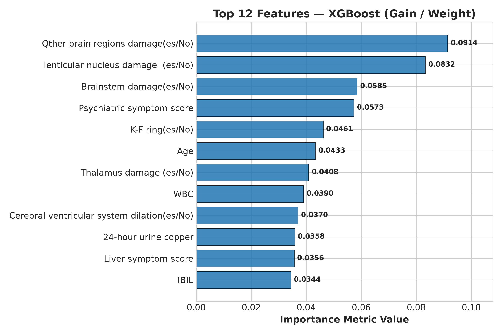
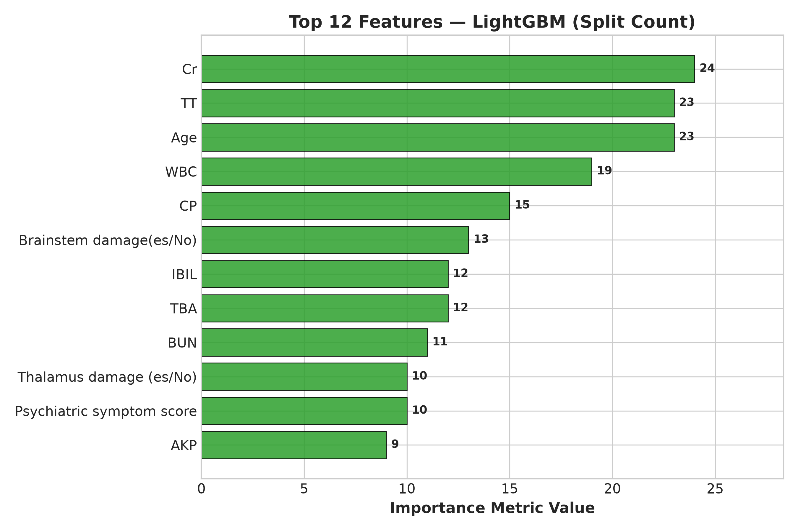
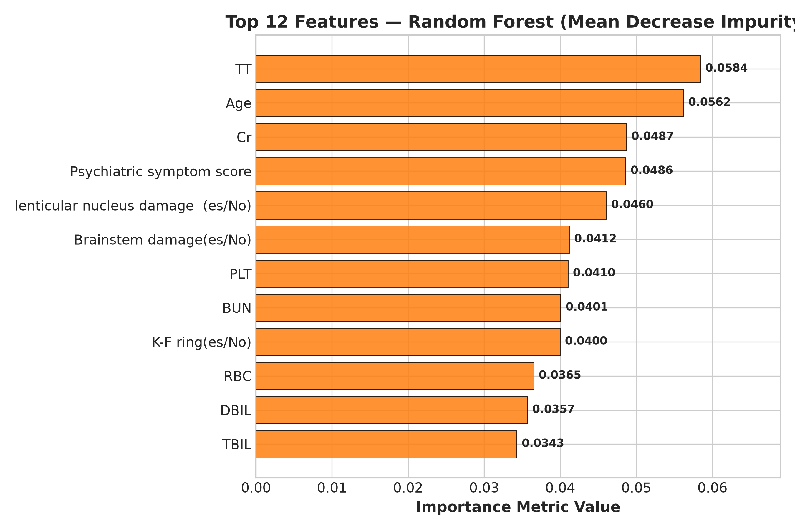
Prominent predictive features recurrently selected across all architectures included:
Cr): Consistently ranked as the top predictive variable in both XGBoost and LightGBM, and third in Random Forest.TT): Ranked among the top four features in all three models, indicating strong association with neurological phenotype partitions.Brainstem damage and lenticular nucleus damage emerged as prominent structural decision drivers.Tree-based feature importance reflects statistical splitting contributions within this specific dataset. These features contributed strongly to the model's predictive behavior within this dataset, but this does not prove biological causation, pathophysiological etiology, or standalone diagnostic utility. Formal game-theoretic auditing using SHAP will be conducted in Stage 06.
"The validation results indicate differences in predictive behavior among the three baseline classifiers. However, model selection should not be based on accuracy alone, particularly given the class imbalance and limited validation sample size."
Summary of leading models by validation metric:
The synDx research roadmap proceeds through structured phases:
Note: No future stage beyond Stage 5 has commenced.
This technical evaluation successfully validated three independent baseline machine-learning models for the classification of neurological symptom phenotypes in Wilson disease patients. XGBoost established the most robust preliminary validation performance, leading in ROC-AUC (0.7875), PR-AUC (0.9621), and probability calibration (Log Loss 0.3132), followed closely by LightGBM. Random Forest proved vulnerable to class imbalance at default decision thresholds.
These findings represent preliminary validation evidence derived from an internal holdout set and are not evidence of clinical deployment readiness. Subsequent phases will address probability calibration and ensemble formulation prior to unsealing the final test set.